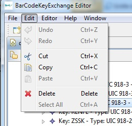

The editing functions are also available in the context menu:


Functions to edit are provided in the edit menu and in the editor menu. These functions are also available in the context menu of the main view and the outline view. The editing of single values is made in the property view.
| function | description |
| cut | cuts the selected element to the clipboard |
| copy | copy the selected element to the clipboard |
| paste | paste the clipboard content in the selected item |
| undo | undo the last change on the selected file |
| redo | redo the last undone change on he selected file |
| delete | delete the selected items |
| create new sibling | creates a new sibling of the selected item - only available on lists |
| create new child | creates a new child item too the selected item |
The editing functions are also available in the context menu: